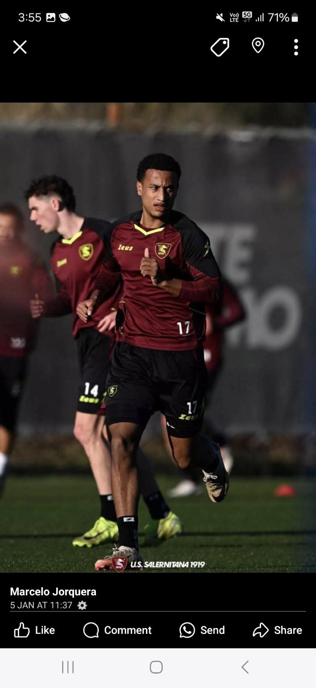

Professional football development and international opportunities
Who We Are
We are a football development academy based in Perth, Australia, founded by Marcelo Jorquera. Our mission is to unlock hidden potential in young players, especially those left aside by traditional systems. We combine elite training, international scouting, and holistic guidance to prepare them for professional football careers.
Our Programs
Term Training: Saturdays 8:00–9:20 AM at Newman College (Churchlands)
School Holiday Program: 3-day intensive (8:30–10:30 AM), same venue
Age Groups: From 7 to 15 years old
MJ Academy
Based at Newman College in Churchlands, MJ Academy has been operating elite weekend programs for over a decade. Our training focuses not just on physical and technical skills, but also on transforming players' mindsets and unlocking their full potential through discipline, identity, and strategic coaching.
International Pathway
We guide players to professional experiences in Argentina and Italy. From training with Boca Juniors or AS Roma, to signing professional contracts with clubs like Gimnasia de Jujuy or Frosinone, our players live the real pathway to international football.
Success Stories

Sammy Barry From MJ Academy to Salernitana (Italy) and Gimnasia de Jujuy (Argentina). A true professional.
Alexander Garbowski Developed from childhood at MJ. Signed in Sweden, captain of Australia U17.
Tom Manuel MJ to Sol de Mayo, now at Gimnasia de Jujuy. A rising talent with media recognition.